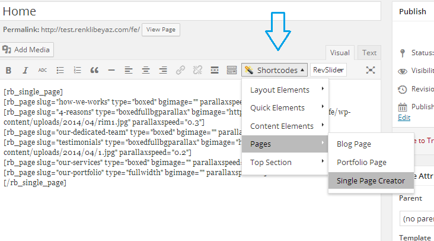

This help documentation was prepared for installation, general knowledge and
"how to directions" for your new theme.
First of all thank you for buying our theme. We tried to clarify everything that you need to know but if you have further questions please register our "member only" forum here. Thank you
Where can i find my Purchase Code ? How to register support forum ?
You need to start your installation by uploading your theme. Then you need to activate it. There are 2 ways of uploading a theme. Uploading over WordPress engine or Using an FTP software.
In your control panel, go to Apperance > Add New Themes > Upload page. Click toBrowse and choose the zip file inside from your theme folder.Then click to Install Now to finis installation.
You need to unzip your theme files before uploading it by an FTP software. Then you need to upload your files to /wp-content/themes/
Then you need to activate your theme from Apperance > Themes page.
From Apperance > Menus page, create a menu and give it a name. Then you need to check its name from Header Navigation , it will be assigned.
You should set ON RB Admin > GENERAL SETTINGS > Enable to use a Front Page.
And then you need to create a page before you assign a Home Page.
To create a new page go toPages > Add New. You may give a name like "Home".
Then click to Publish and your page will be published.
Settings > Reading / "Front Page Displays" area / check A static page (select below) and select the page that we named as "Home" from listed at Front page:
demo_content.xml from your downloaded folder.
Then you need to import it from WordPress. You can start creating a page by Pages > Add New Page .
Adding your title HOME and content [rb_single_page] and click to
[rb_page slug="how-we-works" type="boxed"]
[rb_page slug="4-reasons" type="boxedfullbgparallax" bgimage="http://mythemes.renklibeyaz.com/federalwp/wp-content/uploads/2014/04/rim.jpg"]
[rb_page slug="our-dedicated-team" type="boxed"]
[rb_page slug="testimonials" type="boxedfullbgparallax" parallaxspeed=".2" bgimage="http://mythemes.renklibeyaz.com/federalwp/wp-content/uploads/2014/04/testi.jpg"]
[rb_page slug="our-services" type="boxed"]
[rb_page slug="our-skills" type="boxedfullbgparallax" bgimage="http://mythemes.renklibeyaz.com/federalwp/wp-content/uploads/2014/04/ourskill.jpg"]
[rb_page slug="our-portfolio" type="fullwidth"]
[rb_page slug="twitter-feeds" type="boxedfullbgparallax" parallaxspeed=".3" bgimage="http://mythemes.renklibeyaz.com/federalwp/wp-content/uploads/2014/04/31.jpg"]
[rb_page slug="clients-brands" type="boxed"]
[/rb_single_page]Publish then your page will be published. Also you can create this page with RB Shortcode Generator.

Apperance > Menus page.You can start adding new items to your portfolio by using Portfolios > Add New Portfolio Item button.
But you must to seperate your portfolio into different categories or
want to create multiple portfolio pages you can add your categories from Portfolios > Portfolio Categories page.
First of all give your title and then under Format section (which is at the right part of the page) you must select the type "Images" or "Video" then click to Publish. This process will show chosen format.
Genaral additional settings were special areas that created for portfolio items and accessible from all formats.
If you use Image Resizer Script, this script will cut tour images by centering.
If you want your images cut positioned by like Right Top, Left Bottom, you can choose from this selection.
Image format for Portfolio
When you select this format Featured Image will be shown as thumbnail.
You can specify your larger image's URL here by manually.
If you want, click to Browse and Upload your images to WordPress Media Library or you can choose images from the Library.
Video format for Portfolio
If you choose that format Featured Image will be shown as thumbnail.
You must use this area with this format. You can give the direct URL of Youtube or Vimeo like http://youtu.be/ocQ10JadgIs / http://vimeo.com/12643755.
Script will automatically recognise video site. If you want to use your self hosted video you just need to give its URL.
Info: We suggest you to use mp4 format which have widespread support because of Ipad and Iphone don't support every video format.
These 2 fields must be filled. It needs to be integer. It is important because it calculates the width and height proportion.
You can use shortcodes instead of page templates for Portfolio, Blog or Gallery. It is much more flexible.
Create a page and use [rb_portfolio cats="" imagewidth="475" imageheight="350" type="filter"] shortcode inside, its that simple to show your portfolio items in a single page. You can use Shortcode builder for to create this shortcode.
If you want to use multiple portfolio or if you want to show some categories, you can use[rb_portfolio cats="1,2,3" imagewidth="420" imageheight="240" type="filter"]shortcode. You need to seperate category ids with comma.
You can start adding you articles with Posts > Add New button.
If you want to categorize your articles or if you want to use multiple blog pages you can use Posts > Categoriesbutton.
When you add your portfolio, give a title and then choose a type ("Standart", "Aside", "Audio", "Gallery", "Image", "Link", "Quotes" or "Video") from Format area at the right side of the page then click to Publish. This process will show the chosen format settings.
Genaral additional settings were special areas that created for blog items and accessible from all formats.
If you check this box, while blog detail page is shown, chosen format will be displayed as the first item of shown page according to selected media.
when you see blog detail page, chosen media will be shown as the first item of the detail page according to chosen format.
Standart format for blog posts
When you choose that format, if you assign Featured Image , it will be used as introduction image.
Aside format for blog posts
This format doesn't include title and introduction image except from the text.
Image format for blog posts
If you choose this format Featured Image will be introduction image. And Larger image will be shown in Lighbox.
Lager Image URL (Text Box)
You can give your larger image's URL manually. Or if you want you can click to Browse button and then you can upload your images to WordPress Media Library or you can choose from Library images.
Video format for Blog Post
This area must be used with this format. You can give your Youtube or Vimeo URL http://youtu.be/ocQ10JadgIs / http://vimeo.com/12643755Script will automatically recognise video site. If you want to use your self hosted video you just need to give its URL.
This field must be filled. It must be integer. Video files will be %100 in width and entered height values will be used.
Audio format for Blog post.
This area must be used with this format. You need to give your self hosted audio's URL. Player supports .aac, .m4a, .f4a, .ogg, .oga ve .mp3 formats.
Gallery format for blog post.
If you choose this format Featured Image will be used as thumbnail.
Gallery is not created in this page. You can choose one gallery from GALLERIES. You can check the section releated with Creating a Gallery.
You can use shortcodes for Portfolio, blog or gallery instead of Page Template. It is much more flexible.
Create a page and use [rb_blog] shortcode. Its that simple to create a blog page. You can use Shortcode builder to create this shorcode.
Default is 10 items in a page.If you want to change, you can use [rb_blog cats="" postperpage="6"]]
If you want to create multiple blogs or if you want to show some categorized posts, you can use [blog cats="1,2,3"]
you must seperate your categories ids by using commas.
Default meta format is [blog metaformat="posted, comments, tag, category"] they can be removed. If you remove them they won't be shown in listing. But they will be shown in post detail page.
You can publish your gallery in posts, as portfolio items or standalone. On the other hand, slider shortcodes may use gallery items too.
You should one of theme choose as a front page
You can create your first Gallery by clicking Add a New Gallery in Galleries > Add Gallery Item page and giving its name.
Galleries are called by their "ID" numbers instead of their names
By clicking Add Image > Choose Image button over item list, you can select and upload how many images you want at once.
By clicking Add Video button over item list you need to enter whole url of the video. Then you need to enter its width and height values.You can finish the process by clicking Add Media button. Thumbnails of Youtube and Vimeo files are created automatically. But you should upload poster image for your self hosted videos.
You can use shortcodes for Portfolio, blog or gallery instead of Page Template. It is much more flexible.
Create a page and use [rb_gallery id="1" imagewidth="300" imageheight="300"] shortcode. Its that simple to show your images and video files. You can use Shortcode builder for to create this shortcode.
You can reach theme settings from RB Admin
You can click to Get URL beside Logo URL. Then click the image that you want to use in Image manager.
You can upload your favicon at the same way like Logo uploading. You need to have your favicon in .ico format. Its thumbnail is not shown.
You don't need to use the complete code. You need to copy and paste its ID part.
You can choose which page publish on top section.
You can choose top section for blog, shop and other pages.
You can change footertext, footer background image, footer columns,contact form and social icons links here.
You can change footer header text here.
You can change footer header sub text here.
You can hide and open contact form here.
You can add your copyrights text here.
You can change footer backgrounds image here.
You can change footer backgrounds image here.
You can change footer backgrounds image type (classic, with rainy effect, with parallax) here.
Show / Hide footer pattern option here.
You can manage footer coloumns here.
You can change the colors of the theme in this section. Also You can manage header and content fonts here.
There are 15 widgets area in this theme. Except several ones (bottom pop up, header pop up and page title) all widget areas are shown or hidden according to sidebar's position.
| Name | Description |
|---|---|
Widgets that activated according to the settings or included pages. |
Right Widget Area Left Widget Area FrontPage Widget Area Single Page Widget Area Page Page Widget Area Category Widget Area Tag Widget Area Date Widget Area Search Widget Area |
There are default.po and default.mo files in theme folder. You can edit them by using an editor for any language.
If you find a po editor, try poEdit
After saving your default.po and default.mo files, name it according to international code.
You need to set your WPLANG variable to display different languages in your WordPress configuration. For more information please visit here.
Thank you again for buying our theme. We tried to help you in with this documentation. We can't guarantee that theme is bugless but we can guarantee that we can help you in every condition to run this theme as we said. You can register our "member only" forum and let us know about your problems or any news.